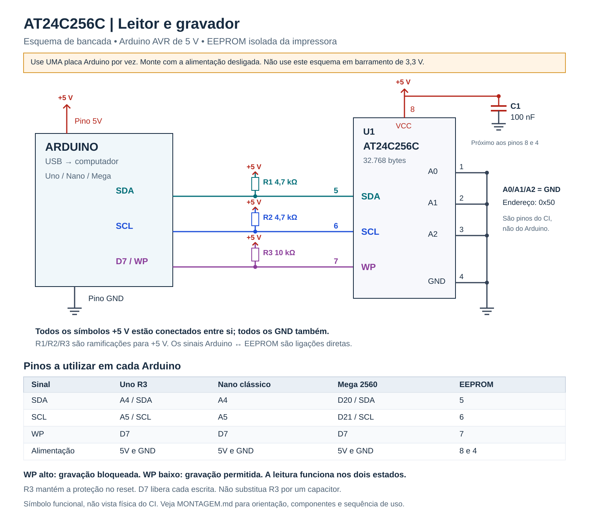

<!doctype html>
<html lang="pt-BR"><meta charset="utf-8"><title>Esquemático AT24C256C / Arduino</title>
<style>body{margin:20px;font-family:Segoe UI,Arial,sans-serif;background:#edf2f6}main{max-width:1500px;margin:auto;background:white}img{display:block;width:100%;height:auto}nav{padding:12px}a{color:#164b86}@media print{@page{size:A3 portrait;margin:8mm}body{margin:0;background:white}nav{display:none}main{max-width:none}img{max-height:395mm;object-fit:contain}}</style>
<main><nav>Esquemático detalhado • <a href="MONTAGEM.md">Guia de montagem</a> • <a href="esquematico_arduinos_at24c256c.svg">Arquivo SVG</a> • Use Ctrl+P para imprimir; ajuste à página.</nav>
</main></html>
